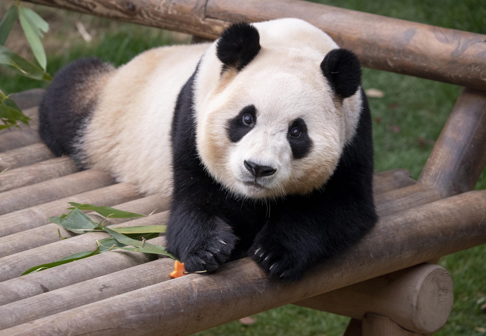

Hello world
Welcome to my web by YCWONY!
What I like ..... 👇
capybara
fubao
sukjoo
I miss you FUBAO🐼 ~

Fu Bao was born in July 2020 to parents Ai Bao and Le Bao, who subsequently produced twin cubs,[3] the first twin pandas to be born in South Korea. Fu Bao's name means "lucky treasure". She became popular amongst South Korean netizens during the COVID-19 pandemic[2] and her presence also doubled the number of visitors to Everland's Panda World.[4]